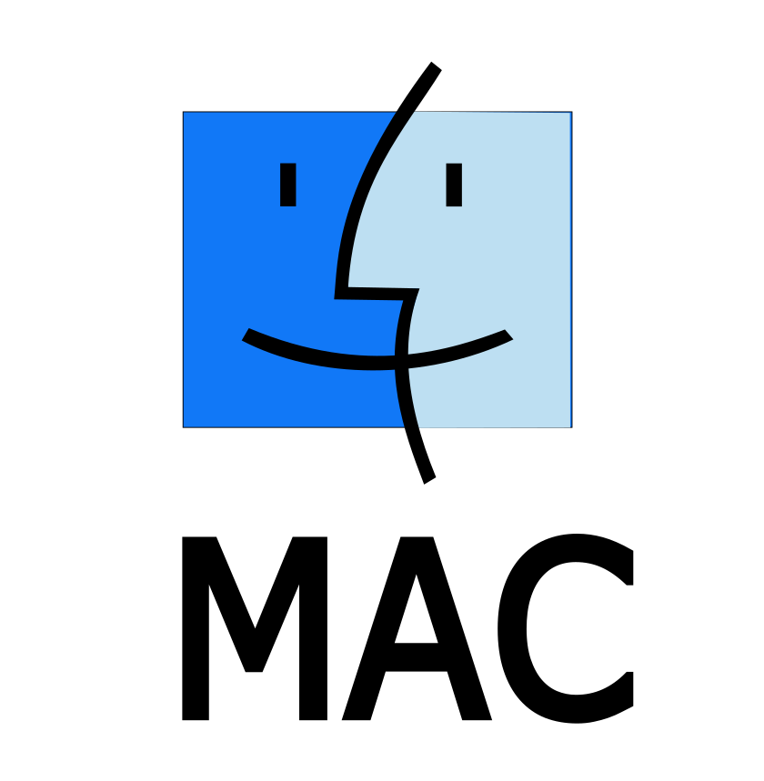

¿Qué son los sistemas operativos?
Un sistema operativo (SO) es un conjunto de programas informáticos que gestionan el hardware y las aplicaciones de un ordenador asignando recursos, como la memoria, la CPU, los dispositivos de entrada/salida y el almacenamiento de archivos.
Un usuario interactúa con un sistema operativo a través de una interfaz de usuario (IU), que emite comandos en un lenguaje que el sistema operativo puede entender. La interfaz de usuario puede ser una interfaz gráfica de usuario (GUI) o una interfaz de línea de comandos (CLI). Miles de millones de personas confían en los sistemas operativos como sistema de gestión subyacente para tareas como enviar correos electrónicos, navegar por Internet, jugar juegos de video y más.
Todos los sistemas informáticos, desde mainframes hasta computadoras de escritorio y dispositivos móviles, necesitan al menos un sistema operativo para realizar tareas, ejecutar aplicaciones e interactuar con el hardware.
En un informe de Statista, Microsoft Windows es el sistema operativo más utilizado en todo el mundo, y controla el 67% del mercado de sistemas operativos de escritorio, tabletas y consolas. macOS de Apple ocupa el segundo lugar en esta categoría.
Android lidera con una cuota de mercado de aproximadamente el 72.04% en la categoría de sistemas operativos móviles, mientras que iOS de Apple ocupa el segundo puesto con un 27.49%.
En el mundo del software de código abierto, Linux es el más popular, ampliamente favorecido tanto por organizaciones como por individuos por su flexibilidad y seguridad.


